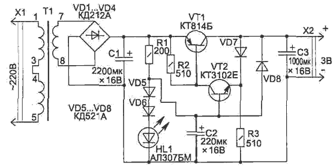
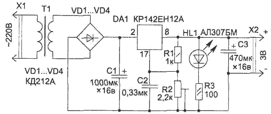

Блок питания на 3 В со стабилизацией
Многие портативные приборы рассчитаны на питание от двух батареек или аккумуляторов и могут в стационарных условиях питаться от любого источника со стабилизированным напряжением 3 В и допустимым током до 0,2 А. Нужный блок питания можно найти в магазинах. Отечественная промышленность таких источников питания выпускает мало. Кроме того, они, как правило, не имеют стабилизации выходного напряжения, что приводит к прослушиванию сетевого фона.
На рисунках 1 и 2 приведены два варианта построения такой схемы, собранных на разных элементах.

Рис. 1 - Схема блока питания на 3 В на транзисторах

Рис. 2 - Схема блока питания на 3 В на КР142ЕН2А
На рисунке 1приведена простая схема блока питания на 3 В (ток в нагрузке 200 мА) с автоматической электронной защитой от перегрузки (Iз = 250 мА). Уровень пульсации выходного напряжения не превышает 8 мВ.
Для нормальной работы стабилизатора напряжение после выпрямителя (на диодах VD1...VD4) может быть от 4,5 до 10 В, но лучше, если оно будет 5...6 В, — меньшая мощность источника теряется на тепловыделение транзистором VT1 при работе стабилизатора.
В схеме в качестве источника опорного напряжения используется светодиод HL1 и диоды VD5, VD6. Светодиод является одновременно и индикатором работы блока питания.
Транзистор VT1 крепится на теплорассеивающей пластине. Трансформатор Т1 можно приобрести из унифицированной серии ТН любой, но лучше использовать самые малогабаритные ТИ1-127/220-50 или ТН2-127/220-50. Подойдут также и многие другие типы трансформаторов со вторичной обмоткой на 5...6 В. Конденсаторы С1...СЗ типа К50-35.
Схема на рисунке 2 использует интегральный стабилизатор DA1, но в отличие от транзисторного стабилизатора, приведенного на рисунке 1, для нормальной работы микросхемы необходимо, чтобы входное напряжение превышало выходное не менее чем на 3,5 В. Это снижает КПД стабилизатора за счет тепловыделения на микросхеме — при низком выходном напряжении мощность, теряемая в блоке питания, будет превышать отдаваемую в нагрузку.
Необходимое выходное напряжение устанавливается подстроечным резистором R2. Микросхема устанавливается на радиатор.
Интегральный стабилизатор обеспечивает меньший уровень пульсации выходного напряжения (1 мВ), а также позволяет использовать емкости меньшего номинала.